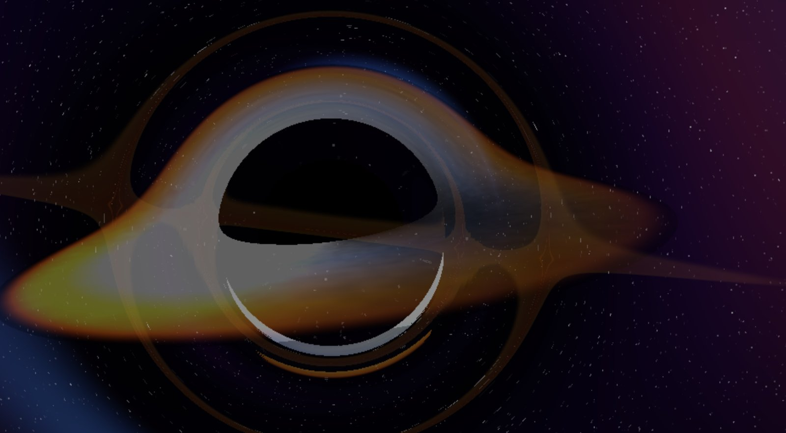

Real-Time General-Relativistic Black Hole Simulation
Personal project · 2025
A real-time black hole renderer that runs in the browser. I wrote a ray marcher that follows light through the Schwarzschild metric, and the live demo lets you rotate, zoom and tilt the accretion disk.

At a glance
- Role
- Sole author (personal project)
- Dates
- 2025
- Tools
- Next.js, WebGL2 / GLSL; OpenCode with a self-hosted agentic AI workflow
- Outcome
- Live demo (v1.6.1) at tristanhottier.github.io/BH_Sim
Physics
Light near a black hole follows null geodesics. For a non-rotating black hole they are set by the Schwarzschild metric. The demo header shows the orbit equation it solves, d²u/dφ² + u = 3Mu², with u = 1/r.
Rendering
The renderer is a WebGL2 ray marcher written in GLSL. It integrates each light path with RK4 and an adaptive step. The image shows gravitational lensing, the photon ring and an accretion disk with Doppler beaming, so the side moving toward you looks brighter.
Accuracy references
I iterated on the visual accuracy against Luminet’s simulation and the Gargantua black hole from Interstellar. This was a visual comparison against those references.
Where it came from
It grew out of an earlier course presentation I gave on black holes, which compared Luminet’s simulation, the M87* EHT image and Gargantua. Before this version I wrote a single-file WebGL renderer with a full parameter UI and five presets.
What the demo lets you do
- Drag (or touch and drag) to rotate the camera in θ and φ.
- Scroll or pinch to zoom.
- Set the disk tilt with a slider, from −180° to 180°.
- Switch realistic (Kepler) disk rotation on or off.
- Set the render resolution from 10% to 100%. It warns that the GPU load is heavy above 90%.
- Press R to reset the view and Space to pause.
Gallery
Screenshots of the live demo.


